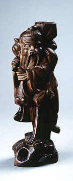

義助慰安婦 —— 李敖百件珍藏義賣藝術品（第42件） 品 名： C11. 大屌壽星 預估價： 4 萬 成交價： 8 萬 說 明： 這是好友施珂先生送李敖的木雕──大屌壽星。它的雕工精美，造型看起來像壽星老人，相當有趣。這位老人一隻手抓住自己生殖器，特別露出大睪丸，似乎在展示自己有很強的生殖能力。 
這是好友施珂先生送李敖的木雕──大屌壽星。它的雕工精美，造型看起來像壽星老人，相當有趣。這位老人一隻手抓住自己生殖器，特別露出大睪丸，似乎在展示自己有很強的生殖能力。